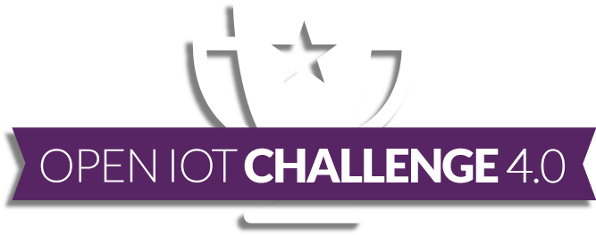
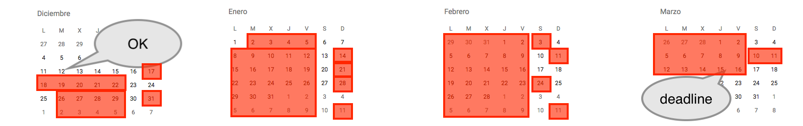
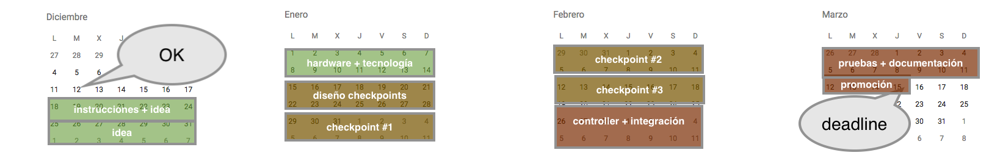

Google Developers Launchpad – 18 Junio 2018
Martin Alvarez @espinr
@espinr
#W3C.es
#CTIC
Guiando la Web a su máximo potencial
Ingeniero IT
Consultor (eGov)
programandor (mediocre)
(algún) conocimiento sobre Arduino

Nov 2017, Benjamin Cabé: [...] today is the last day to submit your proposals for the Open IoT Challenge [...].
[...] We've sent you several emails [...] you are one of the finalists [...] Do you want some devices and a voucher to implement the idea? [...] Please, respond before last week.
–yo también odio el nombre–
La disciplina más seguida durante los JJ.OO.
Source: Statista (2017); and Running across Europe The Rise and Size of one of the Largest Sport Markets (2015)
Fully Automatic Timekeeping: video, RFID,…
Sistema de cronometraje para carreras

Checkpoints: [1..n] Publishers
Controller: Subscriber
QoS 1 (At least once delivery)
//topic: +/checkin
{
"checkpoint" : {
"id" : "…",
"geo" : { "…" }
},
"bibIdentifier" : "…",
"epcIdentifier" : "…",
"timestamp" : 0000000,
}
DIY
App Meteor (Node.js + Blaze + mongoDB)
Subscriptor MQTT a temas +/ready y +/checkin
Ejecutándose en Linux en contenedor Docker (en un Intel UpSquared)
Sistema de cronometraje para carreras
Vocabulario para describir competiciones de atletismo
{
"@context": "http://w3c.github.io/opentrack-cg/contexts/opentrack.jsonld",
"@id": "http://activioty.ddns.net/race/ucGQA3quqyuhnmYfQ",
"@type": "UnitRace",
"name": "Trail Race in the Woods 18 Kms",
"results": [
{
"@id": "http://activioty.ddns.net/race/ucGQA3quqyuhnmYfQ/results#0",
"@type": "Result",
"name": "Result #0 of Trail Race in the Woods 18 Kms",
"rank": 0,
"performance": {
"@type": "Performance",
"competitor": {
"@id": "http://activioty.ddns.net/race/ucGQA3quqyuhnmYfQ/competitor/003",
"bibIdentifier": "003",
"transponderIdentifier": "00 00 00 00 00 00 00 00 00 02 49 17",
"agent": { "@id": "http://activioty.ddns.net/athlete/001" }
},
"time": "0:27:01"
}
},
{
"@id": "http://activioty.ddns.net/race/ucGQA3quqyuhnmYfQ/results#1",
"@type": "Result",
"name": "Result #1 of Trail Race in the Woods 18 Kms",
"rank": 1,
"performance": {
"@type": "Performance",
"competitor": {
"@id": "http://activioty.ddns.net/race/ucGQA3quqyuhnmYfQ/competitor/002",
"bibIdentifier": "002",
"transponderIdentifier": "00 00 00 00 00 00 00 00 00 00 03 11",
"agent": { "@id": "http://activioty.ddns.net/athlete/002" }
},
"time": "0:27:11"
}
},
...
No del todo :)
—seguro que te suena—
—seguro que te suena—

#1 Prioridad satifacer al cliente
sirviendo producto que cumple espectativas
#2 Los cambios son bienvenidos
incluso las últimas semanas
#3 Producir nuevas características frecuentemente
cada semana
#4 Desarrolladores y responsables de negocio
trabajando conjuntamente
https://www.agilealliance.org/agile101/12-principles-behind-the-agile-manifesto/
#5 Desarrollo en torno a profesionales motivados
contagiarán al resto
#6 Conversaciones constantes
entre el equipo de desarrollo
#7 Medir el progreso del proyecto
en base a software y hardware funcionando
#8 Desarrollo sostenible
el equipo debe mantener el ritmo durante el proyecto
https://www.agilealliance.org/agile101/12-principles-behind-the-agile-manifesto/
#9 Atención al buen diseño
y exceléncia técnica
#10 Simplificar es esencial
hacer lo menos posible y que funcione
#11 Equipos autogestionados
cada uno sabe hasta donde llega
#12 Ajustar la planificación
en busca de la eficiciencia
https://www.agilealliance.org/agile101/12-principles-behind-the-agile-manifesto/

Iteraciones (sprints) de una semana:
Aplicar principios de marketing de producto
¿Qué busca el cliente?… ¿con qué se conformaría?… ¿qué característica (barata) le puedo brindar?… ¿cuáles son los puntos débiles del producto?
Muchas más variables a tener en cuenta
Nunca funciona a la primera :-)
Depurar es una pesadilla
Ya existe código para casi todo
Mosquitto y Paho me salvaron el proyecto
Seguimos trabajando en ello
De hecho tengo nuevo trabajo :-)
HEART is a multifunctional retrofit toolkit including different components (ICT, BEMS, HVAC, BIPV and Envelope Technologies) that cooperate to transform an existing building into a smart building.
Martin Alvarez @espinr
github.com/espinr/activioty
CTIC.es / W3C.es
heartproject.eu
w3c.github.io/opentrack-cg/